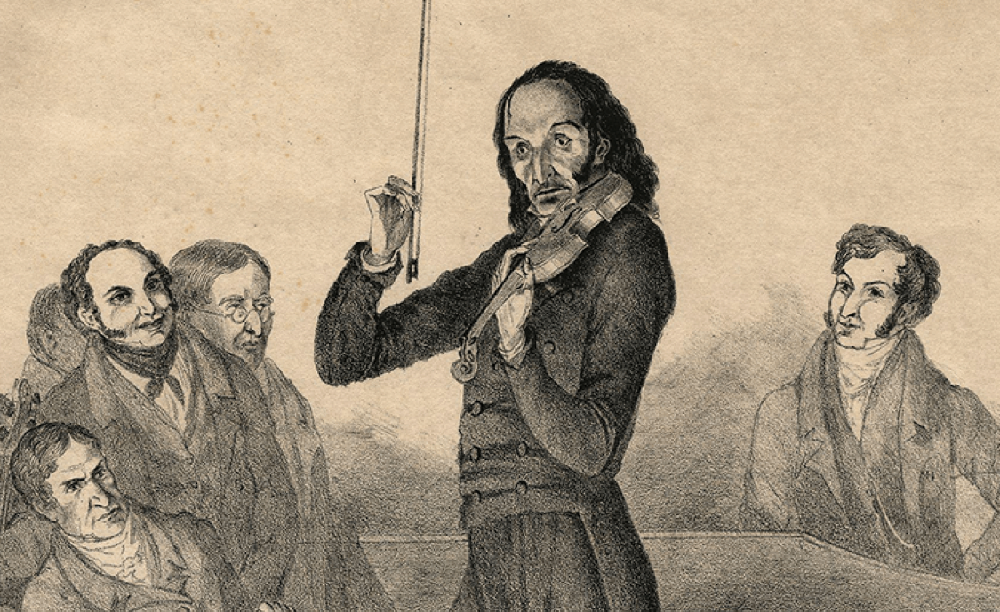

Some of the greatest violin musicians of all time.
| Name | Description | Picture | |
|---|---|---|---|
| 1 | Niccolò Paganini | Paganini is often regarded as one of the most celebrated and influential violinists and composers in history. Born in 1782 in Genoa, Italy, Niccolò Paganini displayed prodigious talent on the violin from a young age. His exceptional technical skills and virtuosity pushed the boundaries of violin playing, revolutionizing the instrument's technique and performance style. |  |
| 2 | Itzhak Perlman | Itzhak Perlman, born in 1945 in Tel Aviv, Israel, is considered one of the greatest violinists of the 20th and 21st centuries. Despite being afflicted with polio at a young age, Perlman overcame physical challenges to develop a remarkable career as a violin virtuoso. | |
| 3 | Hilary Hahn | Hilary Hahn, born in 1979 in Lexington, Virginia, is an American violinist widely recognized for her exceptional talent, technical brilliance, and profound musicality. She began playing the violin at the age of three and quickly displayed prodigious abilities. | |
| 4 | Jascha Heifetz | Jascha Heifetz, born in 1901 in Vilnius, Lithuania (then part of the Russian Empire) and later becoming an American citizen, was one of the most influential and celebrated violinists of the 20th century. Widely regarded as a prodigy from a young age, Heifetz's exceptional talent, flawless technique, and unique sound revolutionized the world of violin playing. |